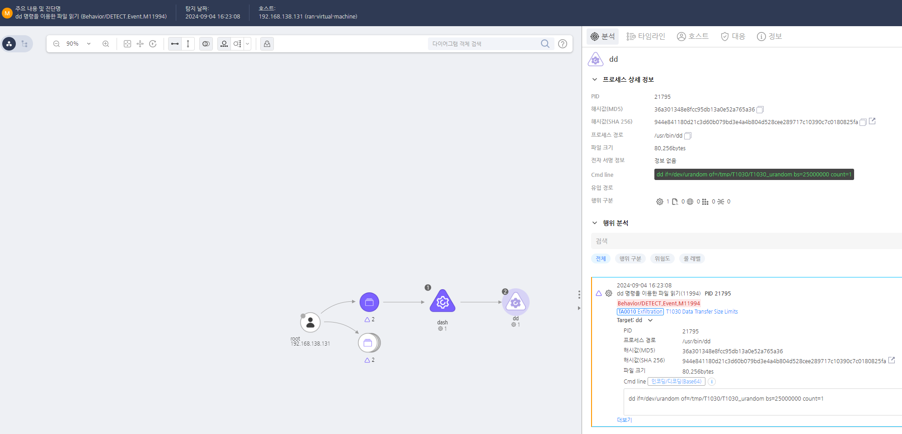
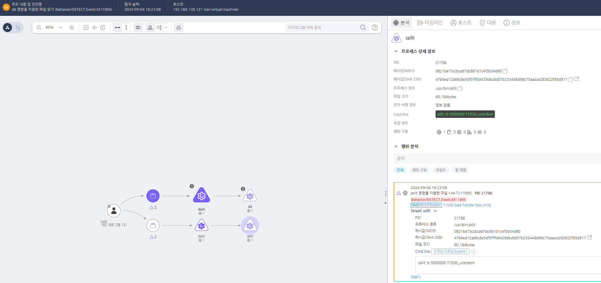

T1030.000.01 데이터 전송 크기 제한
D3FEND
MITRE ATT&CK 액션을 기준으로 대응 방안을 작성
Detection
- Action = "CreateProcess" AND
- TargetCmdLine = "if=" AND "bs=" AND "count=" AND "if=/dev/zero"
Detection(EDR)


Response
대량 데이터 전송을 규제하는 정책을 수립하고, 예외 처리 및 허가된 데이터 전송 경로를 설정한다.
Mitigations
네트워크 트래픽 모니터링 및 이상 탐지
- IDS/IPS(Intrusion Detection/Prevention System)을 설정하여 비정상적으로 작은 크기의 패킷이 다량 전송되는지 감지
- SIEM(Security Information and Event Management) 솔루션을 활용해 비정상적인 데이터 흐름 탐지
- DPI(Deep Packet Inspection) 기술을 적용하여 파일 전송 패턴을 분석하고 데이터 유출 가능성을 확인
데이터 유출 방지(DLP) 솔루션 적용
- DLP(Data Loss Prevention) 솔루션을 활용하여 비인가 데이터 전송을 감지하고 차단
- 데이터 전송 크기, 빈도, 목적지 등을 기반으로 정책을 설정하여 이상 탐지 기능 강화
- 이메일, 클라우드 스토리지(예: Google Drive, Dropbox) 및 외부 네트워크로의 전송 감시
이메일 및 클라우드 기반 데이터 유출 차단
- 이메일 첨부 파일 크기 제한을 설정하여 공격자가 데이터를 나누어 전송하는 것을 방지
- 클라우드 스토리지 업로드 크기 및 빈도 모니터링을 통해 비정상적인 파일 전송 탐지
- CASB(Cloud Access Security Broker) 솔루션을 활용하여 클라우드 서비스에서의 데이터 유출을 제어
USB 및 이동식 저장 장치 사용 제한
- USB, 외장 하드 등 이동식 저장 장치에서 파일 크기 제한 정책 적용하여 대량 데이터 유출 방지
- USB 차단 솔루션(예: Windows Group Policy, Endpoint Security) 적용
- 승인된 장치만 사용 가능하도록 디지털 서명된 USB 허용 정책 설정
전송 프로토콜 및 대역폭 제한
- FTP, SMB, HTTP, HTTPS 등 비인가된 프로토콜을 통한 데이터 전송 차단
- 출발지/목적지별 트래픽 제한 정책을 적용하여 특정 사용자나 시스템이 대량의 데이터를 전송하지 못하도록 설정
- 비정상적으로 작은 패킷이 지속적으로 전송되는 행위 감지
사용자 행동 분석(UBA) 적용
- 사용자 및 시스템의 정상적인 데이터 전송 패턴을 학습하고, 이를 벗어난 이상 행동 감지
- 예: 특정 사용자가 평소보다 훨씬 많은 작은 크기의 데이터를 여러 번 전송하는 경우 경고 발생
- 데이터 유출 및 보안 정책에 대한 교육 제공
파일 및 시스템 로깅 강화
- 모든 데이터 전송 이벤트를 로깅하여, 비정상적인 전송 패턴을 추적
- 파일 업로드, 다운로드, 이메일 전송 기록 분석을 통해 데이터 유출 가능성 모니터링
- EDR(Endpoint Detection and Response) 솔루션을 사용하여 의심스러운 파일 전송 패턴 감지
화이트리스트 기반 애플리케이션 제어
- AppLocker, Device Guard 등을 활용하여 승인된 애플리케이션만 네트워크를 통해 데이터 전송 가능하도록 설정
- 허용되지 않은 파일 공유 및 원격 전송 애플리케이션 차단
- 디지털 서명 검증을 통해 서명되지 않은 애플리케이션 실행 차단
Affected Techniques
Action 실행시 함꼐 영향을 받는 다른 Techniqes
| D3FEND |
| D3-NTF Network Traffic Filtering |
| D3-ITF Inbound Traffic Filtering |
| D3-OTF Outbound Traffic Filtering |